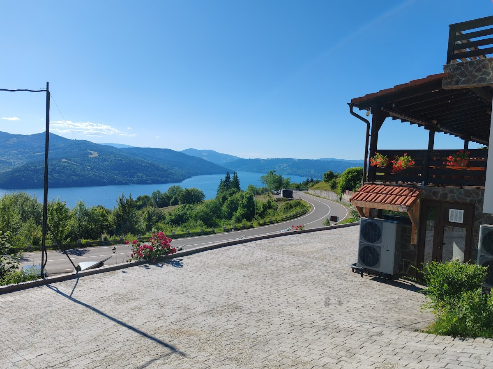
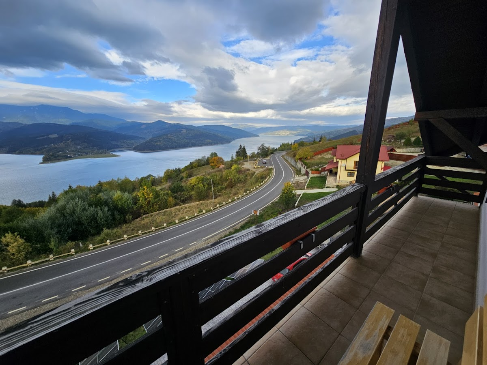
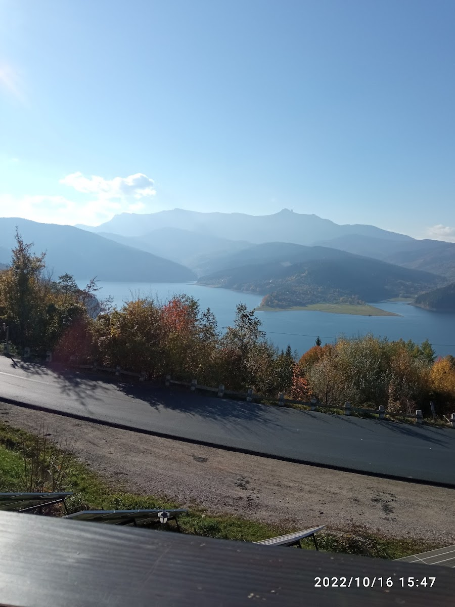
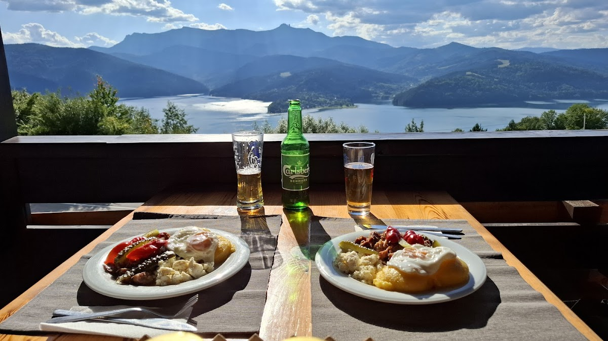
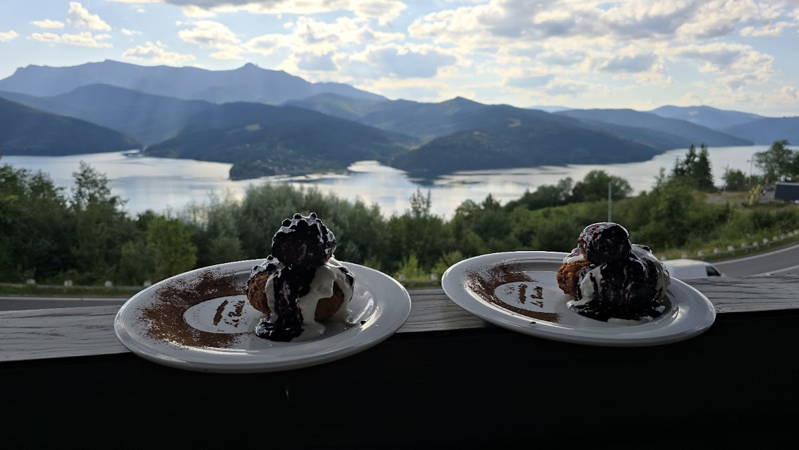
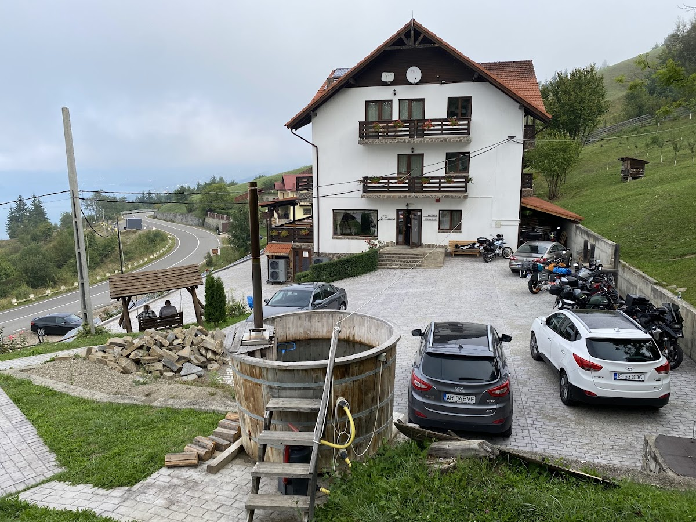
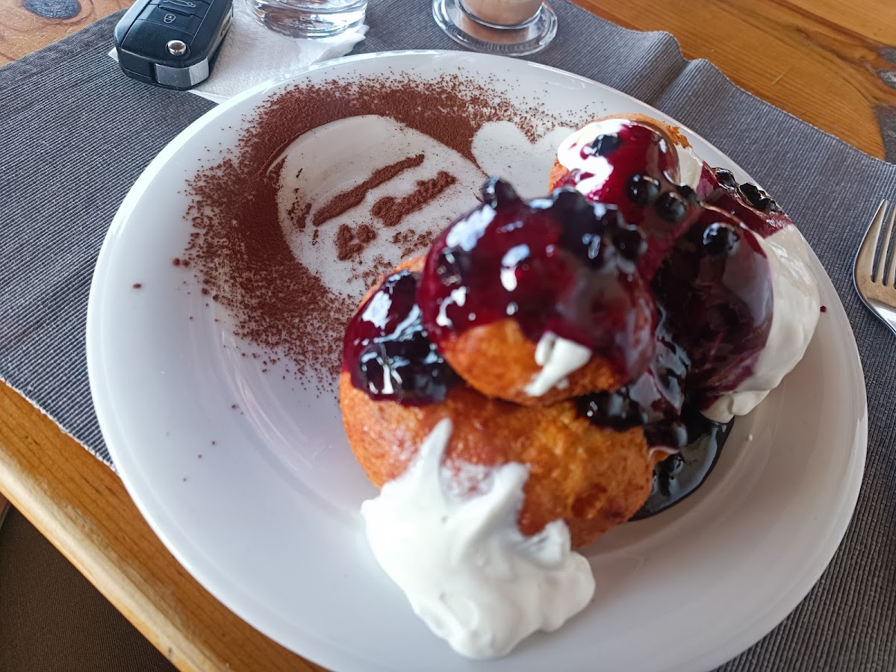
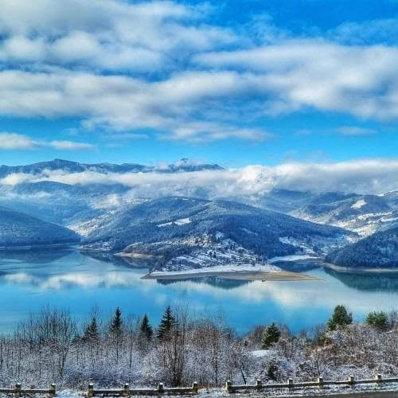
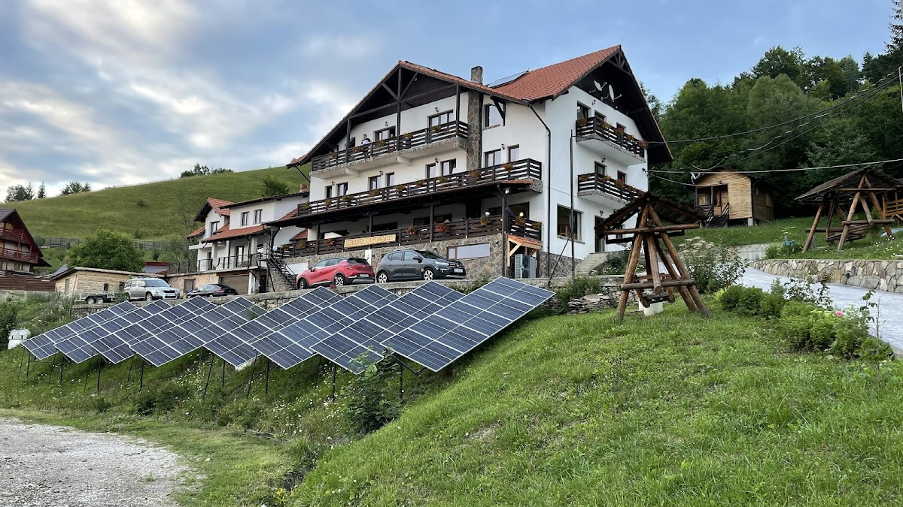

Pensiune · Ruginești, Bicaz · Județul Neamț
Camerele și terasa oferă o priveliște unică spre Lacul Bicaz și vârful Toaca. Un popas cald la munte, pe malul lacului Izvorul Muntelui — cu bucătărie românească de casă și liniștea Ceahlăului la ferestre.
Despre pensiune
O pensiune de familie, cocoțată pe deal, între apa lacului și pădurile Ceahlăului.
Pensiunea La Bunica se află într-o zonă liniștită din satul Ruginești, pe malul Lacului Izvorul Muntelui, între stațiunile Durău și Izvorul Muntelui, chiar lângă drumul DN15. De aici, priveliștea se deschide larg peste lac și peste crestele masivului Ceahlău, cu vârful Toaca la orizont.
Sub același acoperiș găsești camere primitoare cu balcon, un restaurant cu preparate românești de casă, terasă și bar. Este locul potrivit pentru o escapadă la munte, pentru drumeții pe Ceahlău sau pentru o zi petrecută pe apă.

Ce găsești la noi
Tot ce ai nevoie pentru un sejur liniștit la munte, cu lacul la ferestre.
Terasă și camere cu priveliște spre Lacul Bicaz și crestele Ceahlăului.
Acces la internet wireless gratuit în toată pensiunea.
Parcare privată gratuită la fața locului, chiar lângă pensiune.
Bucătărie românească de casă, bar cu bere, vin și cafea, mic dejun la cerere.
Baie proprie cu duș, TV cu ecran plat, zonă de relaxare și balcon.
Drumeții pe dealurile din jur și plimbări cu barca pe lac, la câțiva pași.


Cazare
Camerele sunt spațioase și primitoare, fiecare cu balcon din care privești lacul și muntele. Sunt dotate cu baie proprie cu duș, TV cu ecran plat și o zonă de relaxare — locul potrivit pentru a-ți începe și încheia ziua în tihnă.


Restaurant & terasă
Bucătăria pregătește preparate românești de casă, servite la masă pe terasa cu priveliște spre lac și munte. Renumele casei îl fac papanașii — pufoși, cu smântână și dulceață de afine — pe farfuria noastră, „La Bunica”.
Galerie
Lacul, muntele, terasa și preparatele casei — imagini reale din pensiune.




Rezervări
Sună-ne pentru disponibilitate, tarife sau o masă la restaurant. Îți răspundem cu drag.
Contact & locație
Sat Ruginești, Nr. 109 — pe malul Lacului Izvorul Muntelui, lângă DN15, județul Neamț.